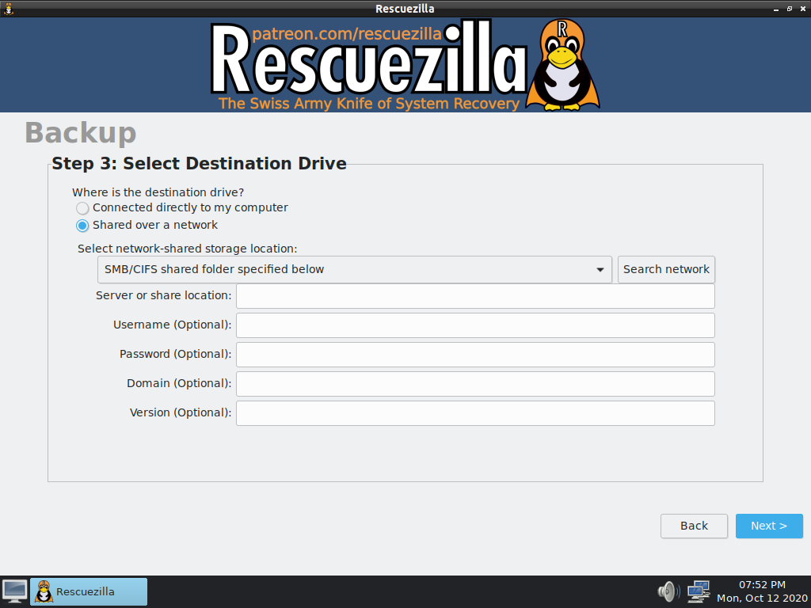

Dans le cadre de mes stages au CHHB, j'ai deployé Windows sur plusieurs PC grâce au logiciel Rescuezilla
Ce logiciel se grave sur une clé USB bootble et permet de sauvegarder ou de restaurer une image du disque dur du PC
A chaque nouvelle gamme de PC, je devais donc installé Windows 10 LTSC de manière classique et faire un master
Pour cela, je démarrait sur Rescuezilla et sauvegardait l'image soit sur un disque dur externe, soit sur un dossier réseau partagé
Si l'image était à destination ou en provenance d'un réseau, il fallait indiquer un utilisateur ayant le droit d'accéder à la ressource
Le déploiement se passe de la même manière

Retour